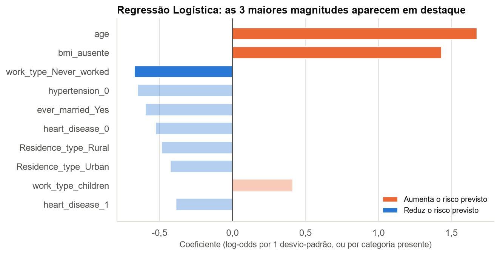
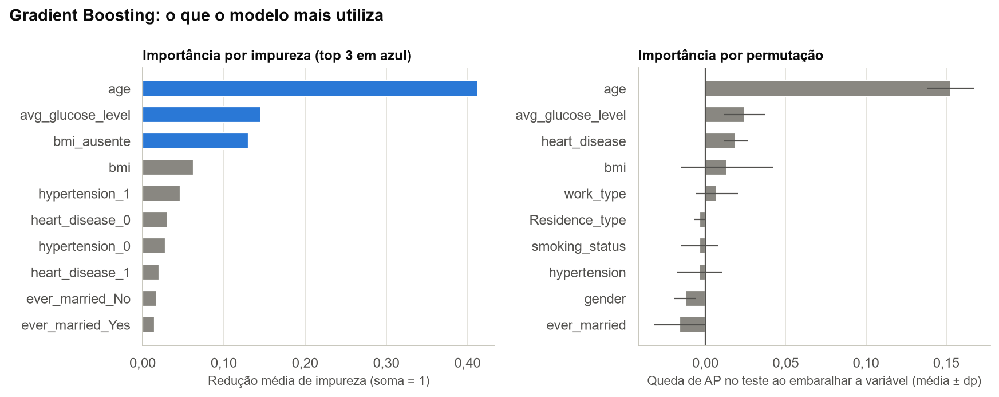
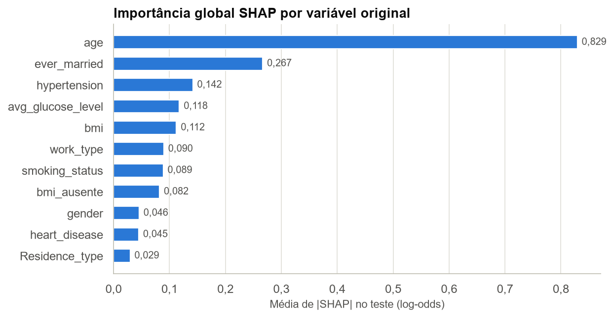
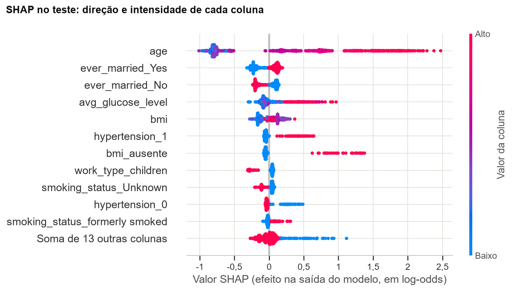
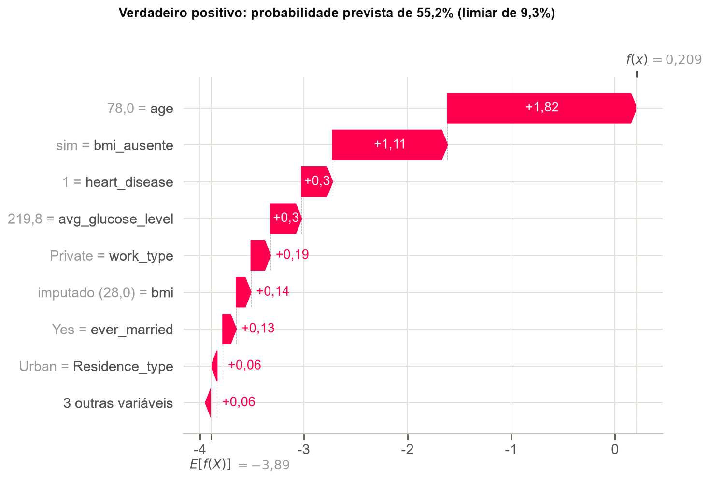
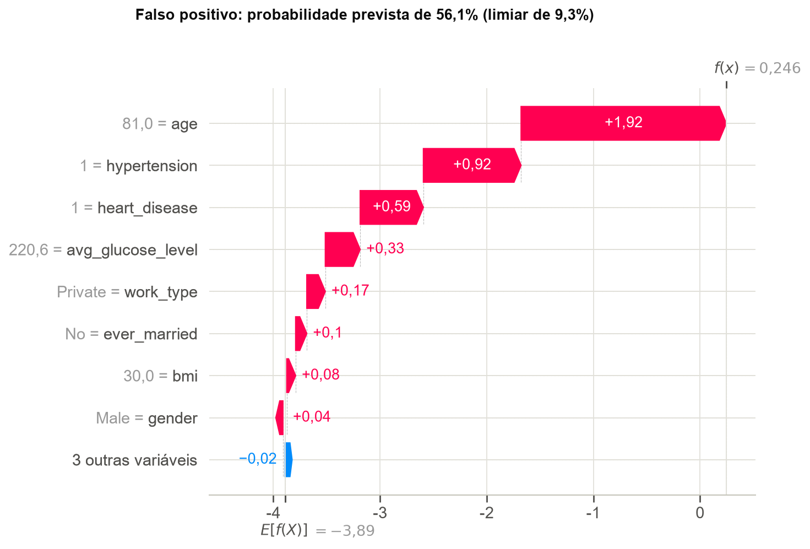
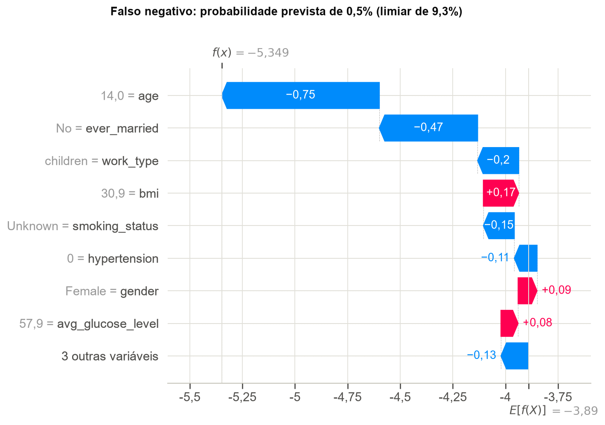

Interpretação e Explicabilidade¶
3.1 Modelo linear: as 3 maiores magnitudes¶
Analisamos a regressão logística ajustada com o pipeline final (C = 100, Elastic Net). As variáveis numéricas estão padronizadas, então seus coeficientes valem por 1 desvio-padrão; os das colunas one-hot valem para a presença da categoria.

| Coluna | Coeficiente | Razão de chances |
|---|---|---|
age |
1,675 | 5,34 |
bmi_ausente |
1,432 | 4,19 |
work_type_Never_worked |
-0,673 | 0,51 |
hypertension_0 |
-0,649 | 0,52 |
ever_married_Yes |
-0,595 | 0,55 |
heart_disease_0 |
-0,524 | 0,59 |
As 3 maiores magnitudes:
age(+1,675; razão de chances de 5,34 por desvio-padrão de 22,6 anos, ou 2,10 por década): o maior efeito do modelo, coerente com a EDA.bmi_ausente(+1,432; razão de chances de 4,19): mantidas as demais variáveis, a ausência debmiestá associada a chances (odds) estimadas de AVC aproximadamente 4,19 vezes maiores, valor próximo ao estimado na Seção 1.3. Carrega o risco de vazamento discutido naquela seção.work_type_Never_worked(-0,673; razão de chances de 0,51): não deve ser lido como proteção. A categoria tem 13 pacientes no treino, nenhum com AVC, e idade mediana de 17 anos.
Cuidado com colunas one-hot. Como o pipeline mantém todas as categorias, uma coluna de cada variável é redundante, e só a diferença entre categorias é identificável. Residence_type_Rural (-0,484) e Residence_type_Urban (-0,425) parecem importantes, mas a diferença entre elas é de apenas 0,059. A tabela de contrastes traz a leitura correta: hipertensão tem razão de chances de 1,48; doença cardíaca, de 1,15; e fumar em comparação a nunca ter fumado, de 1,26.
Esses valores são associações condicionais, e não efeitos causais comparáveis entre si (Westreich; Greenland, 2013).
| Contraste | Diferença de log-odds | Razão de chances |
|---|---|---|
work_type_Never_worked vs work_type_Private |
-0,644 | 0,53 |
work_type_children vs work_type_Private |
0,440 | 1,55 |
hypertension_1 vs hypertension_0 |
0,390 | 1,48 |
work_type_Self-employed vs work_type_Private |
-0,294 | 0,75 |
ever_married_Yes vs ever_married_No |
-0,281 | 0,76 |
smoking_status_smokes vs smoking_status_never smoked |
0,235 | 1,26 |
smoking_status_formerly smoked vs smoking_status_never smoked |
0,191 | 1,21 |
heart_disease_1 vs heart_disease_0 |
0,139 | 1,15 |
Residence_type_Urban vs Residence_type_Rural |
0,059 | 1,06 |
gender_Male vs gender_Female |
0,037 | 1,04 |
3.2 Modelo ensemble: as 3 maiores importâncias¶

| Coluna | Importância por impureza |
|---|---|
age |
0,413 |
avg_glucose_level |
0,146 |
bmi_ausente |
0,131 |
bmi |
0,063 |
hypertension_1 |
0,047 |
heart_disease_0 |
0,031 |
| Variável original | Queda de AP (permutação) | Desvio-padrão |
|---|---|---|
age |
0,153 | 0,014 |
avg_glucose_level |
0,025 | 0,013 |
heart_disease |
0,019 | 0,008 |
bmi |
0,013 | 0,029 |
work_type |
0,007 | 0,013 |
As 3 maiores importâncias por impureza:
age(0,413): a variável dominante, como na regressão logística.avg_glucose_level(0,146): a EDA já mostrava glicemia mais alta entre os casos de AVC.bmi_ausente(0,131): peso alto para uma coluna binária e rara, reflexo da associação vista no treino.
A importância por impureza é calculada no treino e pode favorecer variáveis com muitos valores possíveis (Strobl et al., 2007), então a conferimos por permutação no teste. Essa conferência confirma age (queda de AP de 0,153) e avg_glucose_level (0,025). Já bmi, que inclui o indicador porque embaralhar a coluna também embaralha as ausências, tem queda de 0,013 com desvio-padrão de 0,029, compatível com zero. O resultado concorda com a Seção 2.6.
3.3 SHAP no melhor modelo¶
O melhor modelo é um ensemble de árvores, então usamos o TreeExplainer, que calcula valores SHAP (Lundberg; Lee, 2017) de forma exata para árvores. Os valores estão em log-odds e somam, com o valor-base, a saída do modelo para cada paciente, propriedade conferida no código. Por essa aditividade, somamos as colunas one-hot para obter a contribuição de cada variável original.
explicador = shap.TreeExplainer(clf_melhor)
explicacao = explicador(X_teste_t)
valores, base = explicacao.values, np.ravel(explicacao.base_values)
assert np.allclose(base + valores.sum(axis=1), clf_melhor.decision_function(X_teste_t), atol=1e-6)
Importância global¶


age(0,829) domina, com três vezes o peso da segunda variável. Quanto maior a idade, maior o risco previsto.ever_married(0,267) aparece em segundo, mas provavelmente funciona como substituto da idade: a idade mediana é de 18 anos entre os que nunca se casaram e de 53 entre os demais. Embaralhá-la não reduz a AP (Seção 3.2) porque as medidas respondem a perguntas diferentes: o SHAP mede quanto a variável move cada previsão, inclusive a de jovens de baixo risco, enquanto a AP depende principalmente da ordem no topo do ranking.hypertension(0,142),avg_glucose_level(0,118) ebmi(0,112) vêm a seguir. Hipertensão e glicose altas aumentam o risco. O efeito debminão é monotônico: valores baixos reduzem o risco, e valores intermediários são os que mais o aumentam.bmi_ausente(0,082) tem média baixa porque só 3% dos pacientes do teste estão nesse grupo. Para esses 31 pacientes, o efeito médio é de +1,07 log-odds, ou cerca de 2,9 vezes a chance.
Três predições individuais¶
Escolhemos três casos do teste: o verdadeiro positivo mais confiante, o falso positivo com maior probabilidade e o falso negativo com menor probabilidade. Cada gráfico parte do valor-base, E[f(X)] = -3,89 (probabilidade de 2,0%, abaixo da prevalência porque é uma média em log-odds), e soma as contribuições até a saída do modelo, f(x).

Verdadeiro positivo (paciente 13, com AVC, probabilidade de 55,2%). Homem de 78 anos com doença cardíaca, glicose de 219,8 e sem bmi registrado. As maiores contribuições são idade (+1,82), bmi ausente (+1,11), doença cardíaca (+0,30) e glicose (+0,30). Este acerto depende parcialmente do indicador de bmi ausente. Sem sua contribuição na decomposição SHAP, a probabilidade calculada seria de aproximadamente 29%, ainda acima do limiar. Essa estimativa é apenas uma decomposição matemática, não uma nova previsão do modelo.

Falso positivo (paciente 3318, sem AVC registrado, probabilidade de 56,1%). Homem de 81 anos com hipertensão, doença cardíaca e glicose de 220,6. Idade (+1,92), hipertensão (+0,92), doença cardíaca (+0,59) e glicose (+0,33) explicam a previsão. O modelo atribuiu alta probabilidade de AVC devido à combinação de idade elevada, hipertensão, doença cardíaca e glicose elevada. Embora o registro indique ausência de AVC, esse caso ilustra como o classificador pode produzir falsos positivos em indivíduos com características associadas ao desfecho.

Falso negativo (paciente 245, com AVC, probabilidade de 0,5%). Paciente de 14 anos, do sexo feminino, com work_type = children e sem hipertensão ou doença cardíaca. Idade (-0,75), ever_married (-0,47) e work_type (-0,20) reduzem o risco, e só o bmi de 30,9 (+0,17) o aumenta de forma relevante. As três maiores contribuições refletem, na prática, a pouca idade. O treino tem apenas 3 AVCs em 1.780 pacientes de até 40 anos, então o modelo tem pouco com que aprender esse padrão.